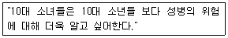
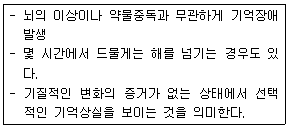
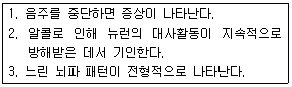
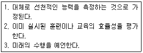
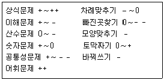
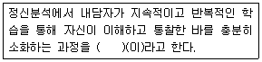
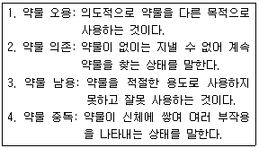

1과목: 심리학개론
1. 도박이나 복권의 경우처럼 높은 반응률로 지속적인 반응을 이끌어내는 강화계획은?
2. 다음 중 사례연구의 장단점을 잘못 설명한 것은?
3. 다음 중 Erikson의 발달단계에 대한 설명으로 틀린 것은?
4. 부모나 친구 혹은 영화배우 등의 행동을 본뜸으로써 학습하게 되는 것을 무엇이라고 하는가?
5. 얼마간의 휴식기간을 가진 후에 소거된 반응이 다시 나타나는 현상을 무엇이라고 하는가?
6. Watson이 실시한 Albert의 공포 형성 실험이 주는 시사점이 아닌 것은?
7. 사람들에게 어떤 집에 관한 기술을, 한 집단은 주택구매자의 입장에서, 다른 집단에게는 도둑의 입장에서 읽게한 후 나중에 그 글에 대한 회상을 살펴보니 두 집단 간에 현저한 차이가 발생했다. 이 현상을 가장 잘 설명할 수 있는 인지 개념은?
8. 효과적인 처벌의 사용방법이 아닌 것은?
9. 하향적 처리(top-down processing)의 영향을 받는 기억현상과 관련이 없는 것은?
10. 귀인과정에서 사용하는 정보가 아닌 것은?
11. 인지적 일관성 이론의 설명으로 적합한 것은?
12. 켈리(Kelly)의 공변모형에 의하면 사람들은 세 가지 정보를 검토하여 외부귀인하거나 내부귀인한다고 한다. 이 세 가지 정보에 해당하지 않는 것은?
13. 과자의 양이 적다는 어린 꼬마에게 모양을 다르게 했더니 많다고 좋아한다. 그 아이의 논리적 사고를 피아제(Piaget) 이론으로 본다면 다음의 문제 중 어디에 속하는 가?
14. 분실 휴대폰을 찾아주며 보상을 요구하는 사람이 있다. 이 사람은 콜버그(K梗hlberg)의 도덕발달 수준 중 어디에 속하는가?
15. Cattell의 성격이론에 대한 설명 중 틀린 것은?
16. 다음의 가설 중에서 종속변수에 해당하는 것은?

17. 범죄자를 추적하는 추적견을 훈련시키거나 써커스에서 탁구를 하는 비둘기 등의 동물을 훈련시킬 때 사용되는 도구적 조건형성과정의 방법은?
18. 인본주의적 성격 심리학자였던 Maslow가 언급한 욕구 단계에서 최상 단계에 해당하는 것은?
19. 타인의 어떤 행위에 대한 원인을 찾을 때 그 사람이 처했던 외부적 상황 요인을 과소평가하는 경향은 무엇인가?
20. 다음 중 발달과 관련된 유전-환경의 논쟁 중 환경을 가장 강조하는 관점은?
2과목: 이상심리학
21. 다음 보기는 해리성 장애의 어떤 분류에 해당되는가 ?(오류 신고가 접수된 문제입니다. 반드시 정답과 해설을 확인하시기 바랍니다.)

22. 다음 중 불안에 대한 설명으로 맞는 것은?
23. 다음 중 자기애성 성격장애(narcissistic personalitydisorder)의 특징을 바르게 설명한 것은?
24. 정신분열증의 하위유형으로 적절하지 않은 것은?
25. DSM-IV에서 성격장애를 몇 개의 군으로 나누고 있다. 극적이고 감정적이며 변덕스럽고 충동적인 행동을 주 특징으로 하는 군에 해당되지 않는 것은?
26. 대형화재현장에서 살아 남은 남성이 불이나는 장면에 극심하게 불안증상을 느낄 때 의심할 수 있는 가장 가능성이 높은 장애는?
27. 주의력결핍-과잉행동장애(A-D/HD)에 대한 설명으로 틀린것은?
28. 주요 우울장애 환자가 일반적으로 나타내는 특징적 증상이 아닌 것은?
29. 정신분열증을 설명하는 소인-스트레스(diathesis-stresstheory)이론이란?
30. 반사회성 인격장애(antisocial personality disorder)의 진단기준이 아닌 것은?
31. 다음 학습장애에 대한 설명으로 틀린 것은?
32. 다음 중 DSM-IV의 학습장애로 볼 수 없는 것은?
33. 4세 아동 A는 어머니와 애정적 관계를 형성하지 못하며, 장난감을 가지고 노는 데는 흥미가 없고 사물을 일렬로 배열하거나 자신의 몸을 앞뒤로 흔들면서 알 수 없는 말을 한다. 아동 A에게 진단할 수 있는 가장 가능성이 높은 장애는?
34. 편집성 성격장애의 특징적인 증상은?
35. 치매(Dementia)의 특성에 대한 설명으로 맞는 것은?
36. 조증 삽화나 혼재성 삽화는 한 번도 없었고, 한 번 이상의 주요 우울증 삽화와 경조증 삽화가 있을 때 진단하게 되는 기분장애는?
37. 치매를 유발할 수 있는 요인이 아닌 것은?
38. 다음 진전섬망(delirium tremens : DT)에 대한 설명 중 맞는 것은?

39. 다음 중 정신분열병의 양성 증상이 아닌 것은?
40. 소아기 자폐증의 임상양상에 대한 설명으로 틀린 것은?
3과목: 심리검사
41. 개인지능검사 중 동작성 검사의 순서로 올바른 것은 ?
42. MMPI 타당도 척도에 대한 설명으로 틀린 것은?
43. 다음 중 집중력과 정신적 추적능력(mental tracking)을 측정하는데 흔히 사용되는 신경심리검사는?
44. 다음 중 적성검사의 특징에 해당되는 것은 ?

45. 특정 학업과정이나 직업에 대한 앞으로의 수행능력이나 적응을 예측하는 검사는?
46. 피검자가 매우 피곤하고 불안한 상태에서 웩슬러 지능 검사를 실시할 경우에, 가장 부정적인 영향을 받을 가능성이 높은 검사는 무엇인가?
47. 영아용 발달척도 중에서 여러 가지로 우수하다는 평가를 받고 있으며, 널리 활용되는 도구는 베일리 유아발달척도이다. 베일리 척도에 대한 설명으로 맞지 않는 것은?
48. 한국판 웩슬러 지능검사(K-WAIS)의 특징에 대한 설명으로 틀린 것은 ?
49. 뇌손상이 있을 때 흔히 나타나는 기능장애는 기억장애이다. 뇌손상에 의해 유발된 기억장애에 대한 설명으로 맞지 않는 것은?
50. 표준화검사가 다른 검사에 비하여 객관적인 해석을 가능하게 해주는 이유는?
51. 한 아동이 웩슬러 아동용 지능검사에서 VIQ 125, PIQ 100, FIQ 115를 얻었다. 이 결과에 대한 해석적인 가설이될 수 있는 것은 ?
52. 다음 중 동일한 검사를 동일한 피검자 집단에 일정 시간간격을 두고 두 번 실시하여 얻은 두 검사 점수의 상관계 수에 의하여 신뢰도를 측정하는 방법은 무엇인가?
53. 지능의 일반적인 정의에 해당되지 않는 것은?
54. 심리검사에서 원점수란 실시한 심리검사를 채점해서 얻는 최초의 점수를 말하는데, 이 원점수에 대한 설명이 틀린것은?
55. 정신과에 내원한 환자에게 MMPI를 실시하도록 하여 채점 하였더니 L, K 척도는 40점 이하, F척도는 80점 이상으로 나왔다. 이 피검사자가 보일 수 있는 문제 중에 적합하지 않은 것은?
56. 다음 중 미네소타 다면적 인성검사(MMPI)에 대한 설명으로 틀린 것은?
57. MMPI의 임상척도 중 자신의 신체적 기능 및 건강에 대하여 과도하고 병적인 관심을 갖는 건강염려증적인 양상을 측정하는 척도는?
58. 국어시험에서 독해력을 측정하려다가 암기력을 측정했다면 다음 무엇이 잘못되었다고 할 수 있는가?
59. 다음 중 적성검사에 대한 설명으로 적절하지 않은 것은?
60. 어느 임상환자들의 WAIS검사 반응 특징으로 평균에서의 이탈도가 다음과 같이 나타났을 때 이에 대해 바른 설명은?

4과목: 임상심리학
61. 최초의 심리진료소를 설립함으로서 임상심리학의 초기발전에 직접적으로 중요한 공헌을 한 인물은?
62. 정신병리가 의심될 때 주로 사용하는 구조화된 정신의학적 면접법은?
63. 속도검사는 개인차가 전적으로 수행속도에서 발생하는 종류의 검사를 말한다. 이런 속도검사의 신뢰도를 평가하기에 가장 적합한 신뢰도 유형은?
64. 지역사회 심리학 활동에 대한 설명 중 틀린 것은 ?
65. 임상심리학자의 수련모형은 임상심리학자의 역할과도 밀접한 관련이 있다. 다음 중 Boulder 모델에서 제시한 임상심리학자의 주요 역할을 가장 잘 열거한 것은?
66. Rogers의 인간중심접근에 대한 설명이 맞는 것은?
67. 임상심리클리닉에 설치된 일방거울(one-way mirror)을 통해 결혼생활에 문제가 있는 부부의 대화 및 상호작용을 관찰하여 이들의 의사소통문제를 평가하는 관찰법은?
68. 대뇌 구조 중 특히 해마의 손상은 기억상실증을 유발하며 단기기억력을 크게 손상시킨다. 해마손상은 대뇌피질의 어떤 영역의 손상을 의미하는가?
69. 수영하기를 두려워하는 어린 딸에게 수영을 가르치기 위해 아버지가 직접 수영하는 것을 보여주었다. 이것은 행동치료의 어느 기법에 해당되는가?
70. 다음 중 체계적 둔감절차의 핵심적인 요소는?
71. 학생 상담시 어떤 학생이 또래들에게 가장 선호되고, 혹은 그렇지 못하는가를 확인해 보기 위해 사회관계 측정법(sociogram)을 사용한다. 다음 중 상담자가 사회관계 측정법을 사용할 때 유의해야 할 점이 아닌 것은?
72. Beck이 우울증 환자에 대한 관찰을 기반하여 사용한 용어로, 자신을 무가치하고 사랑받지 못할 사람으로 간주하고, 자신이 경험하는 세계가 가혹하고 도저히 대처할 수 없는 곳이라고 지각하며, 자신의 미래는 암담하고 통제할 수 없으며 계속 실패할 것이라고 예상하는 것을 의미하는 용어는?
73. 행동관찰은 가장 보편적이고 광범위하게 연구되는 행동평가 방법 중의 하나이다. 행동관찰 중 비참여관찰 체계에서는 관찰자는 내담자와 의미있는 접촉없이 행동을 관찰하게 된다. 이 비참여 관찰의 특성으로 볼 수 없는 것은?
74. 행동의학에서 보는 관상동맥성 심장질환과 관련된 대표적 성격 특성은?
75. 다음 중 초기 접수면접에서 확인해야 할 가장 중요한 정보는 ?
76. 단기 역동적 심리치료에서 강조되는 것은 ?
77. 임상심리학자의 윤리 원칙들에 대한 설명으로 적당하지 않는 것은?
78. 다음 뇌의 기능에 관한 설명 중 틀린 것은?
79. 건강심리학에서 주로 다루는 내용이 아닌 것은?
80. 행동의학에서 보는 두통 치료에 가장 권장되는 심리적 기법은?
5과목: 심리상담
81. 다음 중 만성정신과 환자를 위한 정신재활치료에서 사례 관리의 목적은?
82. 스트레스 취약성 대처능력 모형이 함축하는 것과 거리가 먼 것은?
83. 사이버상담의 발생과 미래에 대한 설명으로 옳지 않은 것은?
84. 인터넷중독의 상담전략 중에서, 게임 관련 책자, 쇼핑 책자, 포르노 사진 등 인터넷 사용을 생각하게 되는 단서를 가능한 한 없애는 기법은?
85. 집단모임에서 여러 명의 집단원들로부터 부정적인 피드백을 받은 한 집단원에게 다른 집단원이 그의 느낌을 묻자 아무렇지도 않다고 하지만 그의 얼굴표정이 몹시 굳어있을 때, 지도자가 이를 직면하고자 한다. 다음 중 직면기법에 가장 가까운 반응은 어느 것인가?
86. 성피해자의 심리상담 초기 단계에서 유의사항으로 틀린것은?
87. 상담 면접의 기본 방법으로, 내담자의 말과 행동에서 표현된 기본적인 감정, 생각 및 태도를 상담자가 다른 참신한 말로 부연해 주는 것은?
88. 특수한 진단을 피하고, 직업적 역할속에서 자아의 개념을 명백히 하고 실행할 수 있도록 돕는 직업 상담의 이론은?
89. 다음 중 인지행동치료의 기본 가정에 속하지 않는 것은?
90. 알콜 중독자의 상담에 대한 내용으로 틀린 것은?
91. 도박중독자에게 현재의 처지에 직면시키기 위하여, "떼돈을 벌겠군요. 모든 일이 한꺼번에 해결되겠네요?"라고 말해주었을 때 이 반영기법은?
92. 효과적인 전화상담을 위해 상담자가 활용할 수 있는 기본적인 방법들에 속하지 않는 것은?
93. 다음 ( )에 알맞은 것은?

94. 내담자가 심리상담실에 찾아와서 자신이 어떻게 행동해야 할지(예를 들면 무슨 말을 해야하는지, 휴대폰을 어떻게 해야하는지, 오늘은 언제까지 심리상담이 진행되는건지 등)를 모르고 불안해 한다. 심리상담자가 무엇을 소홀히했기 때문일까?
95. Beck의 인지치료에서 인지적 오류에 해당되지 않는 것은 ?
96. 가족체제 접근에 대한 설명으로 틀린 것은?
97. 다음은 파운틴하우스(Fountain House)프로그램을 모델로한 정신장애자 직업재활을 위한 프로그램에 대한 설명으로 틀린 것은?
98. 다음 중 설명이 맞는 것은?

99. 성피해를 당한 아동이 보이는 행동 경향으로 보기 힘든 것은?
100. 지지집단 지도자의 가장 중요한 역할은?